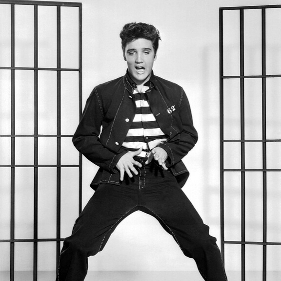

Comienzos del rock
A partir del año 1950 en adelante, el rock empieza a pisar los escenarios de manera más contundente gracias a un artista de nombre Elvis Presley quien graba el tema "That's all right Mama" que, según la renombrada revista Rolling Stone, fue verdaderamente la primera música rock de todos los tiempos.
